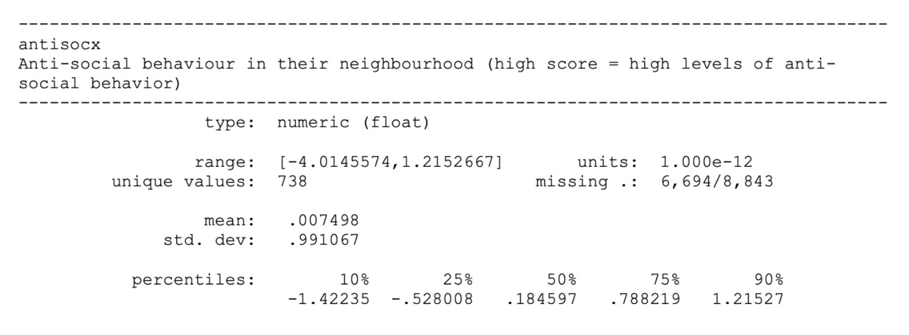
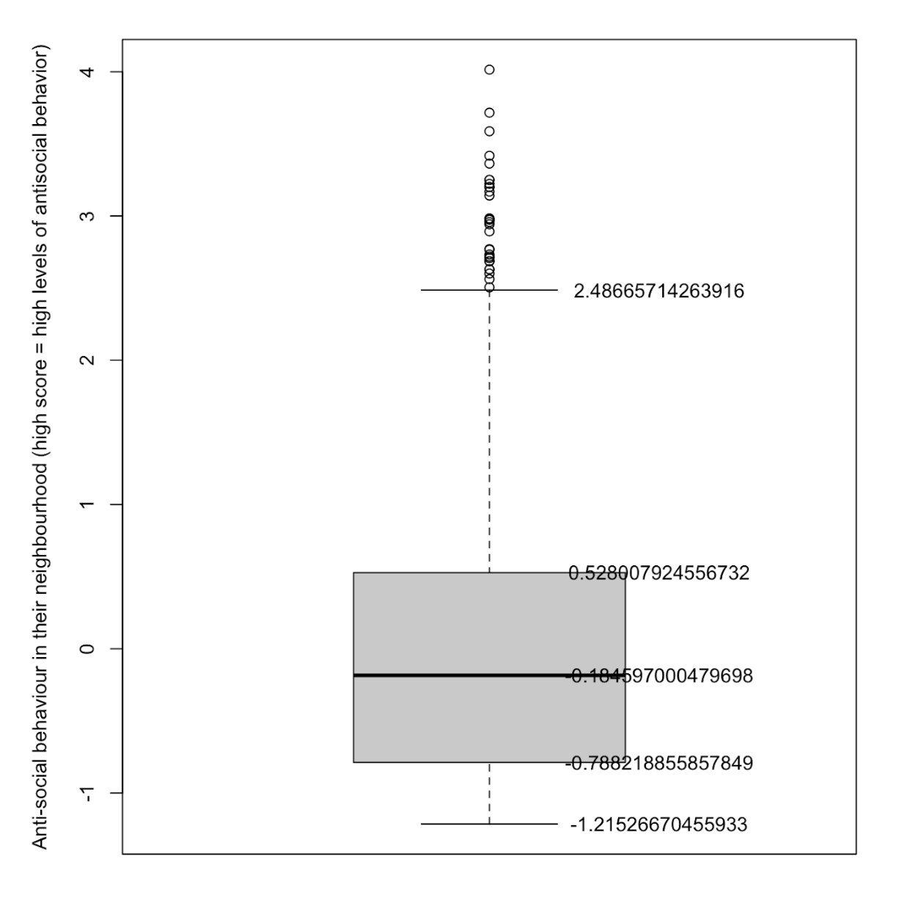

Unit 1
DATA ACTIVITY UNIT 1
Crime Survey for England and Wales, 2013-2014: Unrestricted Access Teaching Dataset
I'm tasked to assess the level of anti-social behaviour that the survey respondents experience in their neighbourhood by creating a summary statistic, using the antisocx variable.
From the dataset's documentation we can see that the antisocx variable has a range of -4.0145574 to 1.2152667, with 6,694 missing values and various other summary statistics:

To confirm these statistics, I explore the data in R applying na.rm = TRUE to ignore the missing values.
# range
> range(dataset[['antisocx']], na.rm = TRUE)
[1] -1.215267 4.014557
# interquartile range
> IQR(dataset[['antisocx']], na.rm = TRUE)
[1] 1.316227
# standard deviation
> sd(dataset[['antisocx']], na.rm = TRUE)
[1] 0.9910673
# further basic summary statistics:
> summary(dataset[['antisocx']])
Min. 1st Qu. Median Mean 3rd Qu. Max. NA's
-1.215 -0.788 -0.185 -0.007 0.528 4.015 6694
> min(dataset[['antisocx']], na.rm = TRUE) - median(dataset[['antisocx']], na.rm = TRUE)
[1] -1.03067
> max(dataset[['antisocx']], na.rm = TRUE) - median(dataset[['antisocx']], na.rm = TRUE)
[1] 4.199154
> boxplot(dataset[['antisocx']], ylab = 'Anti-social behaviour in their neighbourhood (high score = high levels of anti-social behaviour)')
> text(y = boxplot.stats(dataset[['antisocx']])$stats, labels = boxplot.stats(dataset[['antisocx']])$stats, x = 1.25)

> IQR(dataset[['antisocx']], na.rm = TRUE) * 1.5 + quantile(dataset[['antisocx']], p=c(.75), na.rm = TRUE)
2.502348Not including the NA values, there are a total of 2149 entries for the antisocx variable:
> length(which(!is.na(dataset[['antisocx']])))
[1] 2149
> length(which(dataset[['antisocx']] > (IQR(dataset[['antisocx']], na.rm = TRUE) * 1.5) + (quantile(dataset[['antisocx']], p=c(.75), na.rm = TRUE))))
[1] 31
> 100 / 2149 * 31
[1] 1.442531
References:
Bruce, P., Bruce, A. and Gedeck, P. (2020). Practical Statistics for Data Scientists. 2nd Edition. California: O'Reilly Media, Inc.